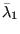

Keyword type: model definition
With this option a damping constant can be defined for contact elements. It is one of the optional cards one can use within a *SURFACE INTERACTION definition. Contact damping is available for implicit *DYNAMIC calculations only. For explicit *DYNAMIC calculations it has not been implemented yet.
The contact damping is applied in normal direction to the master surface of the contact pair. The resulting damping force is the product of the damping coefficient with the area times the local normal velocity difference between the master and slave surface. With the optional parameter TANGENT FRACTION the user can define what fraction of the damping coefficient should be used in tangential direction, default is zero. For a nonzero tangential damping a tangential force results from the product of the tangential damping constant multiplied with the area times the local tangential velocity difference vector. In CalculiX, contact damping is implemented for small deformations.
First line:
Second line:
Example: *SURFACE INTERACTION,NAME=SI1 *SURFACE BEHAVIOR,PRESSURE-OVERCLOSURE=LINEAR 1.e7 *CONTACT DAMPING 1.e-4
defines a contact damping with value  for all contact pairs using the surface interaction SI1.
Example files: contdamp1, contdamp2.